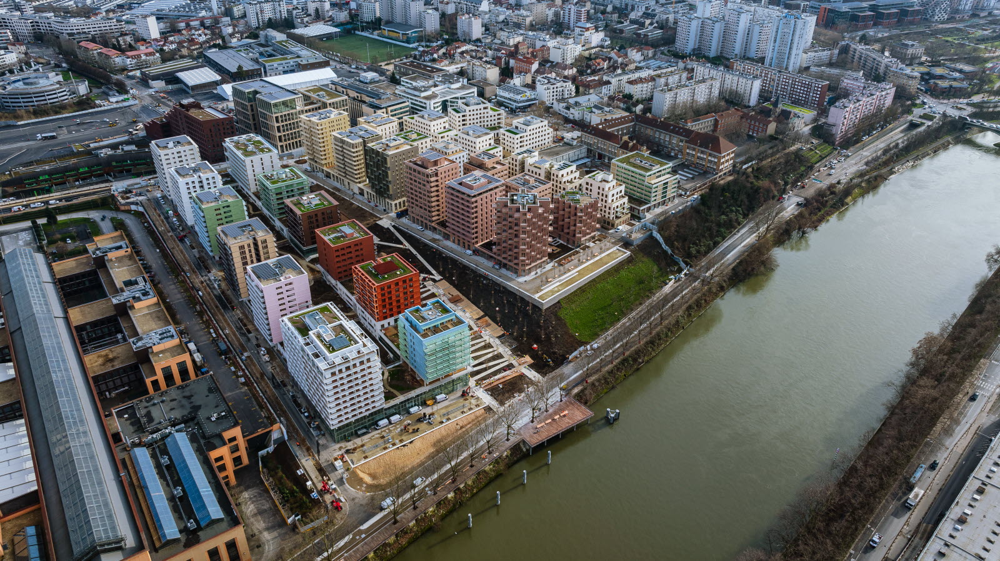
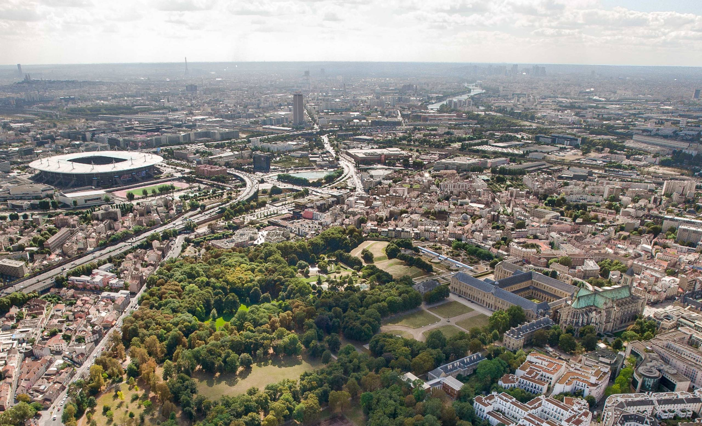
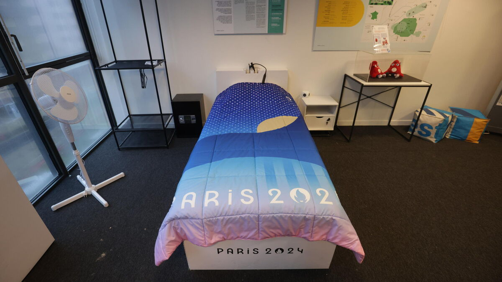
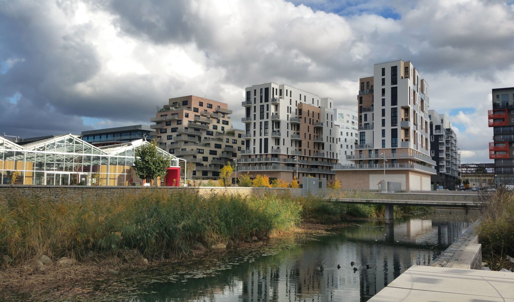

Olympic.Village
Olympic Village: A Haven of Peace and Eco
The Olympic Village is at the heart of the Olympic Games, playing an essential role not only as a place to stay, but also as a space designed for the well-being of the athletes. More than just accommodation, it is a veritable sanctuary where athletes can recharge their batteries, concentrate and prepare mentally and physically for competition. Designed to offer optimum comfort, the village incorporates modern, accessible facilities, enabling athletes to rest, relax and get back into shape.
Strategic location outside Paris
The location of the Olympic Village, close to Paris but outside its hustle and bustle, has been carefully chosen. Located in communes such as Saint-Denis, Saint-Ouen-sur-Seine and the Île de Saint-Denis, this geographical choice transforms a potential constraint into a real asset. Away from the stress of the city, athletes can find a quiet space in which to concentrate, while remaining just a few minutes away from essential infrastructures such as the Stade de France, which hosts the opening and closing ceremonies. This strategic location also reduces the need to travel, contributing to more efficient management of athletes' time and energy, enabling them to prepare with peace of mind and get to events quickly.
Participatory, athlete-centred design
The design of the Olympic Village was carried out in a participatory manner, directly involving athletes in key decisions from the outset of the project. Their feedback was invaluable in identifying the facilities and services that would be of real benefit to them. This co-design process enabled priorities to be set, ensuring that every aspect of the village met athletes' specific needs and expectations. Dedicated spaces, such as fully-equipped gyms and comfortable rest areas, have been designed to create an environment conducive to relaxation and recuperation. As a result, athletes have access to top-quality facilities that promote their well-being. The Olympic Village becomes a refuge where they can disconnect from competitive issues and refocus on their performance.
Eco-Responsibility: A Village Designed for a Sustainable Future
Commitment to the environment is a fundamental pillar of the Olympic Village's design. Construction was carried out using low-carbon materials, such as low-carbon concrete and rigid wooden structures. These design choices aim to reduce environmental impact while guaranteeing the quality and durability of the infrastructure. This approach is part of the wider framework of the Paris 2024 Games, which seeks to promote a sustainable and responsible vision. The Olympic Village embodies this ambition, incorporating environmentally-friendly construction practices and limiting greenhouse gas emissions.